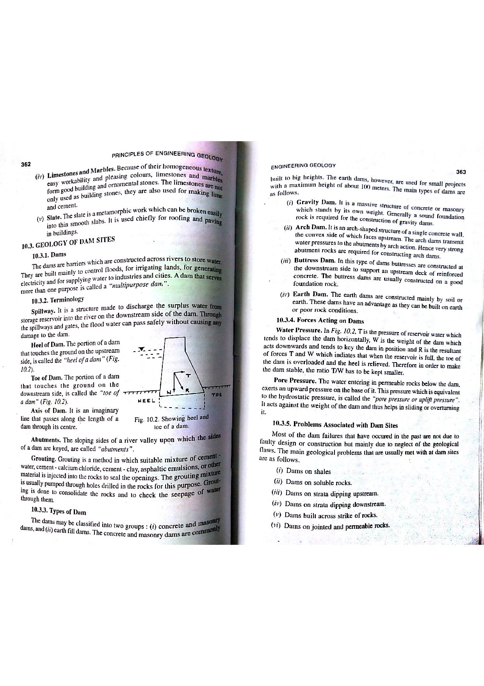

Q125: Schmidt Rebound Hammer: Working Principle, Empirical Indices vs. Absolute Strength
The Schmidt Rebound Hammer (also known as the sclerometer or Swiss hammer) is a portable, non-destructive mechanical instrument widely employed in civil engineering and engineering geology to assess the surface hardness and estimate the compressive strength of rock faces and concrete structures (ISRM, 1978; ASTM D5873; Hoek, 2007; Bangar, p. 188).

Mechanical Operation of the Instrument
The device operates on the principle of elastic collision and kinetic energy restitution:
- A cylindrical steel plunger protruding from the front of the housing is pressed firmly and perpendicularly against the test rock surface.
- This action compresses an internal heavy-duty spring connected to an internal steel hammer mass ($m$).
- At maximum extension, an internal latch automatically releases the hammer mass, propelling it forward with a fixed, calibrated impact energy ($E_{\text{impact}}$).
- The hammer strikes the shoulder of the plunger, which transmits a compressive shock pulse into the rock.
- A portion of the kinetic energy is dissipated through localized plastic deformation, micro-crushing of mineral grains, and acoustic radiation, while the remaining elastic strain energy causes the hammer mass to rebound backward along the guide rod.
- A lightweight rider slides along a graduated scale, capturing the maximum backward displacement. The reading is designated as the Rebound Number ($R$), expressed on an arbitrary scale from $10$ to $100$.

Why Statement (C) is Technically False
The central misconception in non-destructive testing is assuming that the Schmidt hammer gives an "absolute" measurement of rock strength or hardness. It does not:
- No Direct Physical Units: Rebound value $R$ is a purely arbitrary, dimensionless index (scaled $10 - 100$). It does not measure stress (such as $\text{MPa}$ or $\text{N/mm}^2$), nor does it correspond directly to fundamental physical hardness scales (e.g., Mohs scratch hardness, Vickers diamond pyramid hardness, or Brinell ball indentation).
- Strictly an Empirical Proxy: The rebound value reflects the near-surface restitution coefficient of the rock. To convert $R$ into an estimated Uniaxial Compressive Strength ($\sigma_c$), one must rely on empirical statistical regression curves (e.g., the Deere-Miller chart or ISRM equations) that incorporate rock unit weight ($\gamma$):
$$\log_{10} \sigma_c = 0.00088 \gamma R + 1.01 \quad (\text{Deere \& Miller, 1966})$$
- Dependence on Extraneous Testing Variables: The recorded rebound distance is drastically influenced by external environmental and geometric factors independent of intact material strength:
- Hammer Inclination ($\theta$): Gravity accelerates the hammer mass when pointing downward (yielding artificially high readings) and decelerates it when firing upward.
- Surface Roughness & Weathering: A paper-thin weathered rind ($< 1\text{ mm}$) or surface roughness will cause micro-crushing and absorb impact energy, depressing $R$ by $30 - 50\%$ even if the underlying rock mass is exceptionally sound.
- Specimen Rigidity / Mass: When testing loose core pieces without clamping them rigidly in a heavy steel V-block ($> 20\text{ kg}$), the specimen flexes and vibrates, dissipating energy and giving falsely low $R$ values.
- Moisture State: Water-saturated rock surfaces yield systematically lower $R$ values than oven-dry or ambient dry surfaces.
Type L vs. Type N Schmidt Hammers
| Specification | Type L Hammer (Rock Mechanics) | Type N Hammer (Concrete / Hard Rock) |
|---|---|---|
| Impact Energy | $0.735\text{ N}\cdot\text{m}$ ($0.735\text{ J}$) | $2.207\text{ N}\cdot\text{m}$ ($2.207\text{ J}$) ($3\times$ higher energy) |
| Primary Application | Drill cores, thin rock slabs, weak or fragile rocks (ISRM Recommended Standard). | Heavy civil concrete structures, massive in-situ rock outcrops, blocky hard rock faces. |
| Specimen Damage | Minimal surface damage; does not shatter fragile cores. | Can shatter or induce macro-cracking in drill cores of diameter $< 75\text{ mm}$. |
ISRM Standard Data Reduction Protocol
To eliminate outliers caused by local mineral grains, micro-voids, or localized crushing, the ISRM mandates the following test procedure:
- Select a smooth, planar, unweathered rock face free from visible micro-cracks.
- Perform at least $20$ individual impacts separated by at least one plunger diameter ($> 30\text{ mm}$) to prevent testing pre-shattered rock.
- Discard the lowest $50\%$ of the recorded values (which represent local surface crushing or void collapse) and compute the mean of the upper $50\%$ (top 10 values) to establish the representative Rebound Value ($R$).
- (A) It is concrete test hammer originally designed for carrying out in-situ tests on the hardness of concrete.
- (B) The instrument measures the distance of rebound of a controlled impact on a rock surface.
- (C) The distance of rebound (R) gives an absolute measure of surface hardness or strength.
- (D) Schmidt hammer rebound values have been found to correlate well with other measures of rock strength, including Young’s Modulus and Uniaxial Strength.
Historical Fact: The Schmidt rebound hammer was invented in 1948 by Swiss civil engineer Ernst Schmidt specifically for the non-destructive in-situ evaluation of concrete hardness and curing uniformity in civil engineering construction. It was only later adopted by geotechnical engineers and formalized by the ISRM (1978) for rock mechanics testing. Because Statement (A) is factually correct, it is not the "incorrect statement" sought by the question.
Physical Operation: The core working mechanism of the Schmidt hammer relies on a spring-propelled internal mass delivering a controlled, standardized impact energy to the plunger. The rider directly measures the distance of rebound ($R$) of this mass along the guide bar. Because Statement (B) accurately describes the mechanical operating principle of the instrument, it is factually true.
Statement (C) claims that $R$ gives an "absolute measure of surface hardness or strength." This is fundamentally false:
- The rebound number $R$ is a unitless, arbitrary index on a scale from $10$ to $100$. It has no physical dimensions of stress ($\text{N/m}^2$, $\text{Pa}$) or standard hardness units.
- It provides only a relative empirical index. To estimate compressive strength ($\sigma_c$) or Young's modulus ($E$), the rebound number must be calibrated against laboratory crushing tests using empirical correlation charts (Deere-Miller, 1966; Hoek, 2007).
- The reading is heavily influenced by non-material factors including hammer orientation (gravity effects), specimen size/mass, and surface roughness.
Therefore, Statement (C) is the incorrect statement and constitutes the correct answer to the question.
Empirical Validity: Extensive peer-reviewed research across decades (Deere & Miller, 1966; ISRM, 1978; Barton & Choubey, 1977; Hoek, 2007) has proven that when properly normalized for orientation and surface roughness, rebound values correlate exceptionally well ($r > 0.85 - 0.92$) with Uniaxial Compressive Strength ($\sigma_c$), Joint Wall Compressive Strength (JCS), and tangent Young's Modulus ($E_t$). Because Statement (D) is true, it is not the target of the question.
| Test Method | Property Measured | Nature of Result | Standard Units | Destructive vs. Non-Destructive |
|---|---|---|---|---|
| Schmidt Rebound Hammer | Elastic restitution of spring-driven impact | Empirical relative index ($R$) | Dimensionless ($10 - 100$) | Non-destructive (reusable surface) |
| Unconfined Compressive Strength (UCS) | Maximum axial compressive load capacity | Absolute mechanical strength | Stress: $\text{MPa}$ or $\text{N/mm}^2$ | Destructive (complete core rupture) |
| Point Load Strength ($I_{s(50)}$) | Point-load tensile splitting resistance | Empirical index calibrated to UCS | Stress: $\text{MPa}$ | Destructive |
| Mohs Hardness Scale | Resistance to scratching by standard minerals | Ordinal qualitative ranking | Dimensionless scale ($1 - 10$) | Micro-destructive (scratch) |
| Equotip (Leeb) Hardness Tester | Electronic velocity rebound of tungsten carbide ball | Empirical dynamic hardness index ($HL$) | Leeb value ($HL$) | Micro-non-destructive |
A series of 20 Schmidt hammer impacts is conducted on a smooth joint surface in massive granite using a Type L hammer. The recorded rebound values ($R$) in ascending order are: $$32, 34, 35, 36, 38, 38, 40, 41, 42, 42, 44, 45, 45, 46, 48, 48, 50, 51, 52, 54$$ Apply the standard ISRM data reduction protocol to determine the representative rebound hardness ($R_{\text{rep}}$) of the joint surface.
1. According to ISRM (1978) protocol: Discard the lower $50\%$ of the readings (the lowest 10 values: $32$ through $42$).
2. Retain the upper $50\%$ (the highest 10 values): $$\text{Upper } 10 \text{ values} = \{44, 45, 45, 46, 48, 48, 50, 51, 52, 54\}$$ 3. Calculate the arithmetic mean of these 10 values: $$\sum = 44 + 45 + 45 + 46 + 48 + 48 + 50 + 51 + 52 + 54 = 483$$ $$R_{\text{rep}} = \frac{483}{10} = 48.3 \approx 48$$ The representative rebound hardness is $R = 48$.
A tunnel engineer tests the roof of a cavern by firing a Type L Schmidt hammer vertically upward ($\alpha = +90^\circ$). The measured rebound reading is $R_{\text{meas}} = 44$. From Hoek's calibration curves, the gravitational correction for vertically upward firing at this rebound level is $\Delta R = -6.0$. Determine: (a) the normalized horizontal rebound value ($R_{\text{norm}}$), and (b) explain why an upward-fired reading must be reduced.
1. Normalized horizontal rebound value: $$R_{\text{norm}} = R_{\text{meas}} + \Delta R = 44 + (-6.0) = 38.0$$ 2. Physical Explanation: When firing vertically upward, the hammer mass is propelled upward against gravity during impact, but during rebound, gravity pulls the mass downward in the direction of rebound travel, artificially increasing the rebound distance. Therefore, upward readings must be corrected downward to normalize to standard horizontal firing.
A dolerite rock outcrop has a unit weight $\gamma = 29.0\text{ kN/m}^3$. A horizontal Schmidt hammer survey gives an average normalized rebound value of $R = 52$. Using the Deere-Miller empirical regression equation: $$\log_{10} \sigma_c = 0.00088 \gamma R + 1.01$$ (where $\sigma_c$ is in $\text{MPa}$ and $\gamma$ is in $\text{kN/m}^3$), calculate the estimated Uniaxial Compressive Strength of the intact rock.
1. Compute the exponent argument: $$0.00088 \times \gamma \times R = 0.00088 \times 29.0 \times 52 = 1.32704$$ 2. Compute $\log_{10} \sigma_c$: $$\log_{10} \sigma_c = 1.32704 + 1.01 = 2.33704$$ 3. Calculate $\sigma_c$: $$\sigma_c = 10^{2.33704} \approx 217.3\text{ MPa}$$ The rock is classified as ISRM Grade R5: Very Strong Rock.
In Barton's shear strength criterion for rock discontinuities: $$\tau = \sigma_n \tan\left[ \text{JRC} \log_{10}\left(\frac{\text{JCS}}{\sigma_n}\right) + \phi_b \right]$$ Schmidt hammer testing on an unweathered joint surface gives a Joint Wall Compressive Strength $\text{JCS} = 80\text{ MPa}$. The basic friction angle is $\phi_b = 30^\circ$, and Joint Roughness Coefficient is $\text{JRC} = 10$. Calculate the peak shear strength ($\tau$) under an effective normal stress of $\sigma_n = 0.8\text{ MPa}$.
1. Compute the stress ratio: $$\frac{\text{JCS}}{\sigma_n} = \frac{80\text{ MPa}}{0.8\text{ MPa}} = 100$$ 2. Compute $\log_{10}(100) = 2.0$: $$\text{Roughness angle contribution } = \text{JRC} \times \log_{10}\left(\frac{\text{JCS}}{\sigma_n}\right) = 10 \times 2.0 = 20^\circ$$ 3. Total friction angle: $$\phi_{\text{peak}} = 20^\circ + \phi_b = 20^\circ + 30^\circ = 50^\circ$$ 4. Compute peak shear strength $\tau$: $$\tau = \sigma_n \tan(50^\circ) = 0.8\text{ MPa} \times 1.19175 = 0.9534\text{ MPa} \approx 953\text{ kPa}$$
A limestone cliff face shows signs of chemical solution weathering. Schmidt hammer testing directly on the weathered exposed rock face yields a rebound value of $R_{\text{weathered}} = 28$. After grinding away a $4\text{ mm}$ surface layer using a carborundum stone to expose fresh, unweathered limestone, the rebound value increases to $R_{\text{fresh}} = 48$. Calculate: (a) the percentage reduction in rebound hardness caused by the weathering rind, and (b) discuss the implication for rock slope stability.
1. Percentage reduction in rebound hardness: $$\Delta R (\%) = \left(\frac{R_{\text{fresh}} - R_{\text{weathered}}}{R_{\text{fresh}}}\right) \times 100\% = \left(\frac{48 - 28}{48}\right) \times 100\% = \frac{20}{48} \times 100\% = 41.67\%$$ 2. Stability Implication: The weathering rind has lost over $40\%$ of its surface stiffness, and its JCS is significantly degraded. Discontinuity asperities will crush easily under normal stresses rather than overriding them, dramatically lowering dilation and shear resistance along the slope joints.
Using the empirical correlation proposed by Sachpazis (1990) for carbonate rocks: $$E_s (\text{GPa}) = 0.82 \times R - 12.5$$ Estimate the static tangent Young's modulus of a dolomite rock formation that exhibits an average rebound value of $R = 55$.
1. Substitute $R = 55$ into the empirical equation: $$E_s = 0.82 \times 55 - 12.5 = 45.1 - 12.5 = 32.6\text{ GPa}$$ The estimated static modulus of elasticity of the dolomite is $32.6\text{ GPa}$.
The standard impact energy of a Type N hammer is $E_N = 2.207\text{ J}$, while that of a Type L hammer is $E_L = 0.735\text{ J}$. (a) Calculate the ratio $E_N / E_L$. (b) Why does the ISRM specifically recommend the Type L hammer for testing rock core specimens rather than the Type N hammer?
1. Ratio of impact energies: $$\frac{E_N}{E_L} = \frac{2.207\text{ J}}{0.735\text{ J}} = 3.00$$ The Type N hammer delivers exactly three times the kinetic impact energy of the Type L hammer. 2. ISRM Recommendation Reason: Standard drill cores ($NX$ diameter $\approx 54\text{ mm}$) have limited volume and mass. The high kinetic impact energy of the Type N hammer ($2.207\text{ J}$) can induce micro-fracturing, internal spalling, or outright macroscopic shattering of the cylindrical core, invalidating the rebound reading. The gentler $0.735\text{ J}$ impact of the Type L hammer avoids structural destruction of intact cores while still mobilizing elastic rebound.
A laboratory investigation conducts Schmidt hammer tests on identical specimens of sandstone under two conditions: (1) oven-dry, and (2) water-saturated. The dry specimens yield a mean rebound of $R_{\text{dry}} = 42$, while the saturated specimens yield $R_{\text{sat}} = 31$. (a) Determine the percentage decrease in rebound hardness due to water saturation. (b) Explain the micro-mechanical mechanism responsible for this reduction.
1. Percentage decrease: $$\Delta R (\%) = \left(\frac{R_{\text{dry}} - R_{\text{sat}}}{R_{\text{dry}}}\right) \times 100\% = \left(\frac{42 - 31}{42}\right) \times 100\% = \frac{11}{42} \times 100\% = 26.19\%$$ 2. Micro-mechanical Mechanism:
- Rehbinder / Hydro-chemical Softening: Water molecules adsorb onto silicate and clay mineral surfaces at grain boundaries, reducing surface free energy and weakening intergranular cementation bonds.
- Pore Pressure Dissipation: High-frequency dynamic impact momentarily generates transient micro-pore water pressures ($\Delta u$) in saturated pore spaces, reducing effective normal intergranular stress and facilitating plastic grain dislocation and acoustic energy damping.